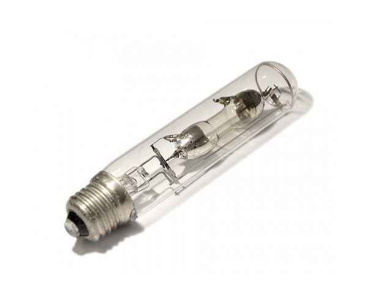

Схема экспериментальной установки
Определение концентрации сахара в растворе с помощью кругового поляриметра
Описание экспериментальной установки
Явление оптической активности положено в основу очень точного и быстрого метода определения концентрации оптически активного вещества.
Принципиальная схема такого метода представлена на рисунке ниже
Анализатор А может вращаться вокруг оси, совпадающей с лучом света. В процессе измерений определяют два его положения. Первое положение анализатора соответствует углу ϕ1, при котором линейно поляризованный свет, вышедший из поляризатора Р, не проходит сквозь систему, содержащую кювету K с растворителем.
Второе положение соответствует углу ϕ2, при котором свет не проходит сквозь систему, содержащую кювету с раствором оптически
активного вещества. В результате определяют угол поворота
ϕ = ϕ − ϕ 2 1 плоскости поляризации света, прошедшего слой исследуемого вещества толщиной l.
Для более точного измерения используют полутеневые
устройства, в которых анализатор или поляризатор заменяют на
полутеневую призму. Схема простейшего полутеневого поляриметра изображена на рисунке ниже
Свет от источника S, проходя через оптическую часть прибора (Z1, S′, Z2, F), попадает в полутеневой поляризатор, состоящий из двух призм P и P′, главные сечения которых повернуты на небольшой угол 2β. Призмы создают два линейно поляризованных колебания ОР и ОР′, разделенных углом 2β
Призма Р′ делит поле зрения,
ограниченное круглой диафрагмой Т, на две равные половины.
Световой пучок в отсутствие кюветы K с исследуемым веществом непосредственно падает на анализатор А, а затем попадает в глаз наблюдателя.
Так как плоскости поляризованных световых колебаний в обеих
половинах пучка составляют 2β, то обе половины зрения будут освещены в общем случае неодинаково.
Одинаковая освещенность устанавливается в том случае, когда главное сечение анализатора А
будет расположено параллельно (или перпендикулярно) биссектрисе АВ угла между колебаниями ОР и ОР′.
Пример работы установки
Порядок выполнения работы
Для выполнения измерений необходимо
выполнить следующее:
1. Откройте верхнюю крышку поляриметра и
вставьте в него трубку с раствором сахара.
2. Подключите поляриметр к электрической
сети и тумблером включите поляриметр. При этом
загорится лампа ДНАС-18. Стационарный режим горения лампы наступает через 10 мин.
3.Посмотрите в глазок.
4. Убедитесь в том, что вращением анализатора при помощи маховичка
можно уровнять яркости полей сравнения как при больших так и при малых яркостях
(положения отличаются поворотом анализатора на 90°), а также в том, что незначительный
поворот анализатора вызывает резкое нарушение равенства яркостей полей сравнения только при малых яркостях.
Второй метод уравнивания полей сравнений соответствует наибольшей чувствительности поляриметра и называется полутеневым методом.
5. Вращением анализатора уравняйте яркости полей сравнения при малых яркостях, т.е. полутеневым методом.
6. Снимите значения со шкалы лимба и занесите в таблицу.